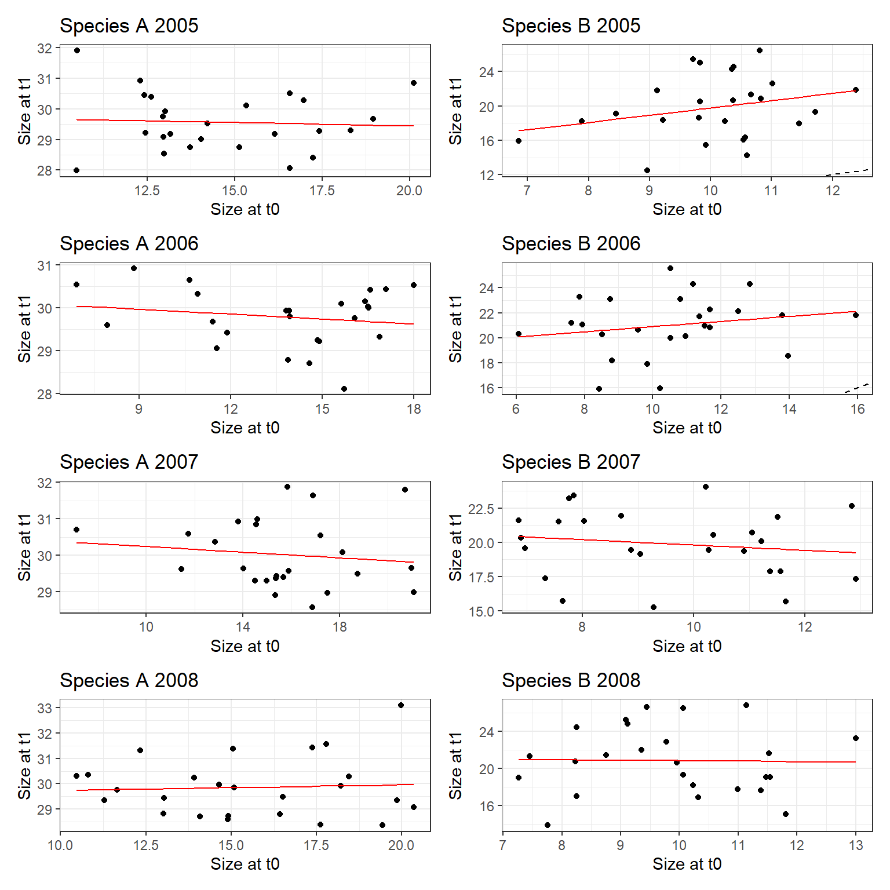

RUPDemo Digitization Guide
2024-09-11
1 Coding Standards
This document defines standard for formatting and organizing scripts, as well as guidelines for coding style to promote readability and consistency in our scripts. Shared standards will facilitate clear communication across the workflow of the RUPDemo project. These standards are derived from the tidyverse style guide.
1.1 Starting a new script
The first step of starting a new script is to give the file a short, descriptive name. The name should ideally begin with a number indicating the order in which the scripts have been written within the project followed by an underscore and a few words describing the main function of the script. More information about when to start a new script and how to organize a project can be found in Chapter 2 : Project Organization.
Start the script by providing metadata about the script. Here is an example of the first 18 lines of a draft of this document:
# Standards for writing code for RUPDemo
# Aspen Workman
# Summer 2024
# The following script provides guidelines and standards for writing code and
# formatting scripts for the RUPDemo project using a demo dataset.
rm( list = ls() )
options( stringsAsFactors = F )
library( tidyverse )
library( ggplot2 )
library( patchwork )
# Data -------------------------------------------------------------------------
demo_df <- read.csv( "https://raw.githubusercontent.com/aspen1030/RUPDemo/main/demo.csv" )Let’s break down the sections which should be included before any content:
Title: The title of the script communicates what the script aims to accomplish, or what makes it different from similar scripts.
Author: Who wrote the script? Include your full name and the name(s) of anyone else who contributed sections of the code. If you are pasting in code from someone else’s script in the group, include their name.
Date: About when were you working on this script? Give a general date.
Short description of the script: If your title is informative enough, then you may not need any other description. However, sometimes it is useful to provide more details about the script in order to properly differentiate it from other scripts, i.e. which version of the model are you working on? Which dataset does this script rely on, and what makes it different? What assumptions are you making about the model? Does this script only focus on a single species from a multi-species publication? This is also the section where you would include the DOI and other citation information in your data formatting script.
Libraries: Clean up the environment if needed, configure settings, and list the packages you will use. Do not load packages in the middle of the script; if you find yourself needing a different package, make sure to scroll back to the top of your script and add it to the list!
Data: Under a new section header, import the data that you will use in the script. As with packages, do not import new data in the middle of the script; add them to the Data section in the beginning even if you don’t need them until later!
After these beginning sections, add a new section header to describe the first step of your script and begin writing!
1.2 Organizing scripts
Use section headers (example below) to initialize a new section of your script. These headers can help you navigate through your script by opening the document outline (top right icon in Source pane).
# Fitting linear models --------------------------------------------------------Avoid nesting of headers. The headers should describe the overall goal of a section of code, and they should not be a line-by-line commentary. Avoid using subheaders to describe each step; simply use a comment line to describe the next step.
Dividing your script into sections can be somewhat arbitrary. The main goal is to maintain continuity within a project. Be consistent with other scripts you’ve written, and aim to have fewer sections rather than too many.
1.3 Formatting sections and comments
The main things to keep in mind when writing a new script are readability and consistency. Try to keep all text within the document bounds (line on right side). Use spaces and blank lines to break things up and be consistent throughout the entire script.
Section headers should be followed by a blank line before any comments or code begin. End a section with two blank lines before the next section header.
Use single blank lines throughout a section to separate different chunks of code.
Comments should always come before the chunk of code they refer to. Begin a comment and include a space after the # before writing any text. Do not put a blank line between a comment and the code it describes. Not all code needs comments, but it is nice to keep track of what you are doing. Comments extending onto a second line should be indented with a tab.
Comments can also be written inside of multi-line piping or ggplots to explain different parts of the code as necessary. Embedded comments should be aligned with the code and presented on their own line(s) before the line the comment explains. Ex.:
# Data formatting --------------------------------------------------------------
# Subset the data for 2008 and 2009, group the data by species, and calculate
# the mean change in size for each species
mean_growth_2008 <- demo_df %>%
# select only data from the year 2008
subset( year == 2008 ) %>%
# group the data by species
group_by( species ) %>%
# calculate the mean change in size for each species
summarize( mean_growth = mean( delta_size ) )
mean_growth_2009 <- demo_df %>%
# no need to add comments here because it's the same code
subset( year == 2009 ) %>%
group_by( species ) %>%
summarize( mean_growth = mean( delta_size ) )1.4 Coding style
Again, please prioritize readability and maintain consistency as you code. Everyone has their own style of coding, and these guidelines should serve as a starting point to keep everything clear and consistent.
Use spaces between all separate objects and operators, including as a buffer around objects within parentheses. Ex.:
# General example: function( object ) * function( object )
growth_a_2010 <- demo_df %>%
subset( year == 2010 & species == "A" ) %>%
mutate( percent_change = ( delta_size / size_t0 ) * 100 )In longer chunks of code, align all <- and be sure to put spaces before and after the <-. In general, keep all code aligned in easy-to-read columns and don’t be afraid to break up function inputs across multiple lines. Again, try to keep everything within the document bounds. Ex.:
growth_a <- demo_df %>%
subset( species == "A" ) %>%
mutate( percent_change = ( delta_size / size_t0 ) * 100,
log_size_t0 = log( size_t0 ) )
growth_b_2012 <- demo_df %>%
subset( species == "B" & year == 2012 ) %>%
mutate( percent_change = ( delta_size / size_t0 ) * 100,
log_size_t0 = log( size_t0 ) )Give your objects and functions short but descriptive names. Do not use capital letters. Use underscores (_) as separators in object names; do not use periods, as they can cause issues with certain functions. Use “_df” and “_list” or other easy to understand conventions as suffixes to name similar objects of different types. Be descriptive whenever possible and avoid using general names. Numbers should only be used when they are meaningful, i.e. to indicate the year in the previous examples. Never use names like “df3” unless you are creating a temporary object to test out a function you are working on and excluding the temporary object from the script will not impact the functionality of the script.
1.5 Writing functions
You should organize the code using functions whenever possible. As a rule of thumb, when the same operation is repeated twice, then use a function to perform it! This will save time when you notice an error in the input or want to test out different subsets of the data, for example.
Instead of writing a for loop, write a function( i ) and then use lapply( 1:n, function ) to run the function n times. Ex.:
mean_growth_species <- function( i ) {
sp_temp <- c( "A", "B" )[i]
df_temp <- demo_df %>%
subset( species == sp_temp ) %>%
group_by( year ) %>%
summarize( mean_growth = mean( delta_size ) )
return( df_temp )
}
mean_growth_list <- lapply( 1:2, mean_growth_species )
names(mean_growth_list) <- c( "A", "B" )
mean_growth_df <- bind_rows( mean_growth_list, .id = "id" )Do whatever you can to avoid writing nested for loops. Many times, ecological data is nested - in our case, multiple sites within years. In most, if not all of these cases, you can avoid writing nested loops using the function expand.grid( ) to create a dataframe including every combination of two variables, and then use lapply( ) to apply a function across all levels of combinations instead of writing a nested for loop. Ex. (only for the years 2005-2008):
design_df <- expand.grid( sp_i = c( "A", "B" ),
yr_i = 2005:2008 )
plot_growth <- function( i ) {
temp_df <- demo_df %>%
subset( species == design_df$sp_i[i] &
year == design_df$yr_i[i] )
temp_mod <- lm( size_t1 ~ size_t0, data = temp_df )
pred_df <- data.frame( size_t1_pred = predict( temp_mod, temp_df ),
size_t0 = temp_df$size_t0 )
year_temp <- paste0( design_df$yr_i[i] )
sp_temp <- paste0( design_df$sp_i[i] )
plot_out <- temp_df %>% ggplot( aes( x = size_t0, y = size_t1 ) ) +
geom_point( ) +
labs( x = "Size at t0",
y = "Size at t1",
title = paste( "Species",
sp_temp,
year_temp,
sep = " " ) ) +
geom_line( color = 'red',
data = pred_df,
aes( x = size_t0,
y = size_t1_pred ) ) +
geom_abline( slope = 1, intercept = 0, lty = 2 ) +
theme_bw( )
return( plot_out )
}
growth_plots <- lapply( 1: 8, plot_growth )
wrap_plots( growth_plots ) + plot_layout( ncol = 2 )
Each function is evaluated in its own environment which is not the global environment. Use <<- to assign objects to the global environment within a function (object will appear in the list in the Environment pane). Use <- to assign objects within the function’s environment (object will not appear in the Environment pane and will only exist when you call of the function).
Functions can contain complex conditional syntax, i.e. chains of if else statements to perform different actions under certain circumstances.
In general, a function should perform a single action; write multiple functions to string together instead of nesting multiple complex actions within the same function.